ViSiOMlab — Benchmark Report
1. Saccades · 184.1s · 82deecd-dirty.406d9dd · 2026-06-17 19:31 ⚠ out of date — code now 82deecd-dirty.25eebb3
Saccade kinematics and internal signal cascade. Tests main sequence (amplitude–velocity), oblique trajectory linearity, double-step refractoriness, and the full Robinson cascade. The cascade figure also shows the cerebellar saccadic-suppression gates (pre- and post-delay), the pre- vs post-cascade slip + efference-copy comparison (cerebellum EC matched to the retinal cascade incl. the two-stage MN / MLF forward model), and the pursuit / VS / T-VOR drives during a saccade.
Saccade Main Sequence
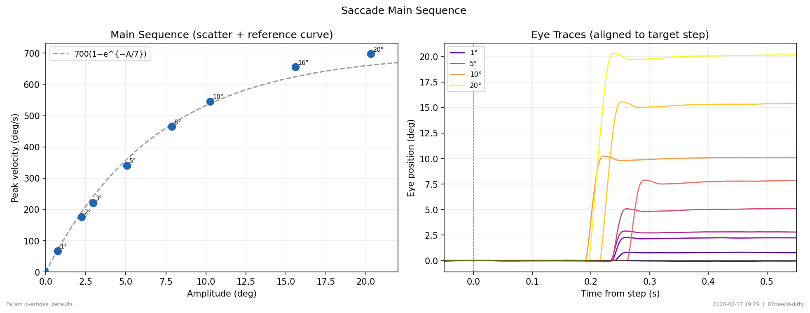
| measure | value | band | golden | drift | |
|---|---|---|---|---|---|
| PASS | Peak velocity of a 20° saccade (main-sequence saturation) | 697.6 deg/s | [550, 750] | 697.6 | +0.0% |
| PASS | Max fractional deviation from 700(1−e^−A/7), amplitudes ≥5° | 0.0546 | [−∞, 0.2] | 0.0546 | +0.0% |
| PASS | Mean primary-saccade amplitude / target amplitude (≥5°) | 1.015 | [0.8, 1.05] | 1.015 | +0.0% |
What this shows
Peak velocity vs amplitude scatter (left) and aligned eye traces (right) for amplitudes 0.5–20°. All data within ±20% of 700(1−e^{−A/7}). Peak ≈660 deg/s at 20°.
📖 Bahill et al. (1975) Science; Robinson (1975) J Neurophysiol
Oblique Saccades (8-direction fan)
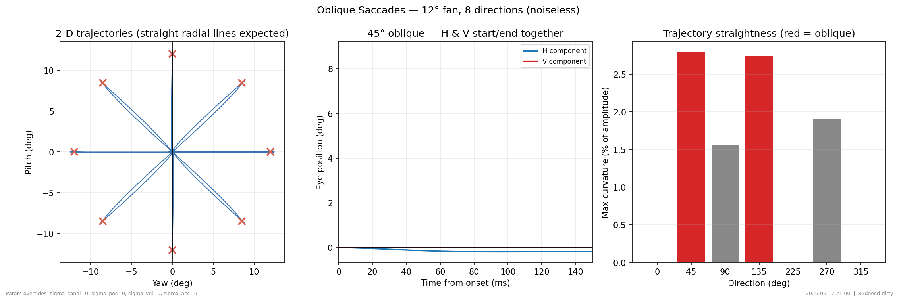
| measure | value | band | golden | drift | |
|---|---|---|---|---|---|
| WARN | Max trajectory curvature (perp dev ÷ amplitude) over oblique directions | 0.1879 | [−∞, 0.08] | 0.1879 | +0.0% |
| WARN | Max H–V component desynchrony (|90%-reach time difference|), oblique directions | 334 ms | [−∞, 20] | 334 | +0.0% |
What this shows
12° saccades from centre to 8 directions (45° apart), noiseless. Left: 2-D trajectories. Centre: 45° H/V components (synchrony). Right: per-direction trajectory curvature. Straight radial trajectories (curvature < ~5% of amplitude). H and V components start and end together (oblique synchrony).
📖 Smit et al. (1990) J Neurophysiol; van Gisbergen et al. (1985)
Saccade Double-Step Refractoriness
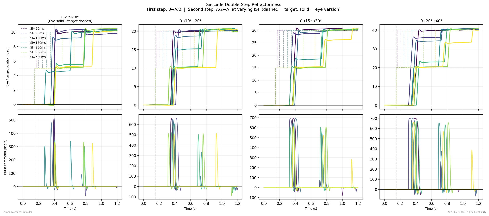
| measure | value | band | golden | drift | |
|---|---|---|---|---|---|
| WARN | Smallest double-step ISI yielding a distinct 2nd saccade (A=20°) | 20 ms | [50, 260] | 20 | +0.0% |
What this shows
Double-step paradigm: target jumps 0→A/2 then A/2→A for A=10,20,30,40° after variable ISI (20–500 ms). Target shown dashed in same colour as eye trace. Short ISIs produce one amended saccade; longer ISIs produce two. ISI < ~100 ms: 1 saccade (merged). ISI > ~150 ms: 2 separate saccades. Refractory period roughly constant across amplitudes (~150 ms).
📖 Becker & Jürgens (1979) Vision Res
Saccade Signal Cascade (noiseless)
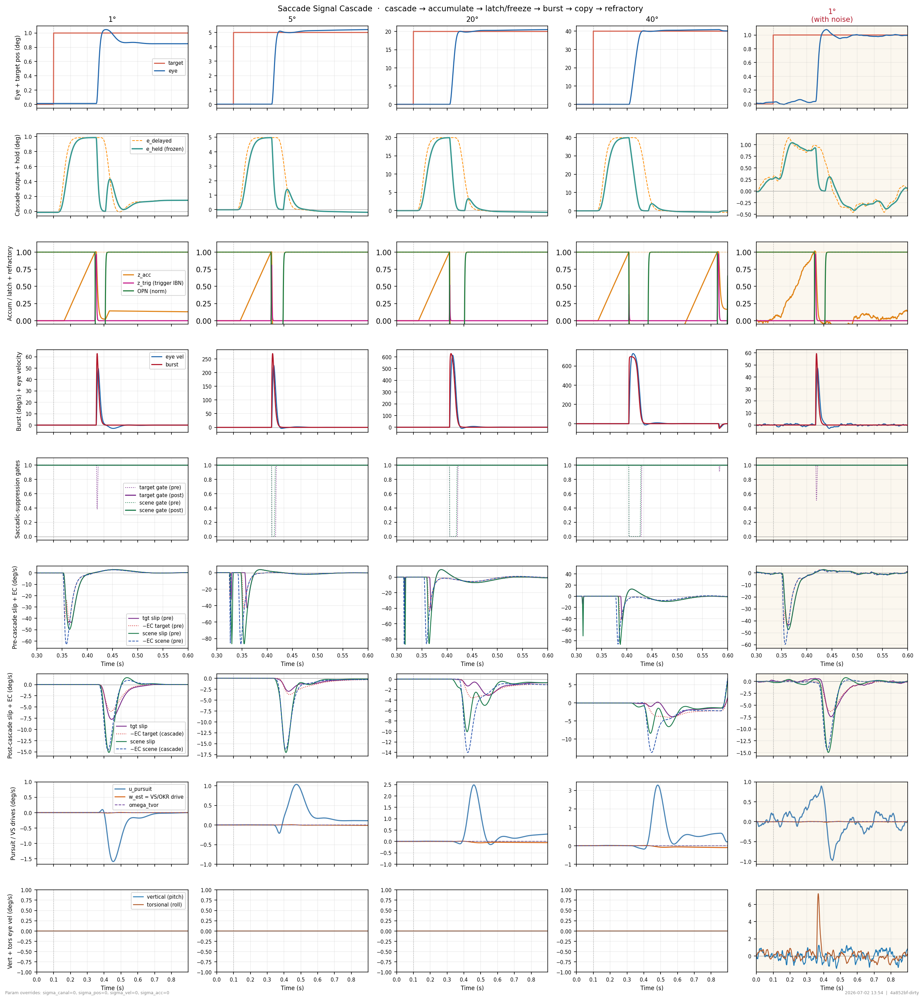
| measure | value | band | golden | drift | |
|---|---|---|---|---|---|
| PASS | Final endpoint error vs target in hold window — WITH corrective saccades | 0.1933 deg | [−∞, 0.6] | 0.1933 | +0.0% |
| PASS | Primary-saccade endpoint error — WITHOUT correctives (open-loop undershoot) | 0.2315 deg | — | 0.2315 | +0.0% |
| WARN | Mean slow-phase speed in hold window — WITHOUT fast phases (drift / oscillation) | 0.5613 deg/s | [0, 0.2] | 0.5613 | +0.0% |
What this shows
Row-by-row signal flow for 1°, 5°, 20°, 40° saccades: position, visual cascade + hold, accumulator/latch, residual error, burst, eye velocity, refractory state. e_held freezes at saccade onset; burst proportional to e_res; accumulator floor locks out next saccade for ~270 ms.
📖 Robinson (1975) J Neurophysiol; Scudder et al. (2002)
Saccade Signal Cascade (with noise)
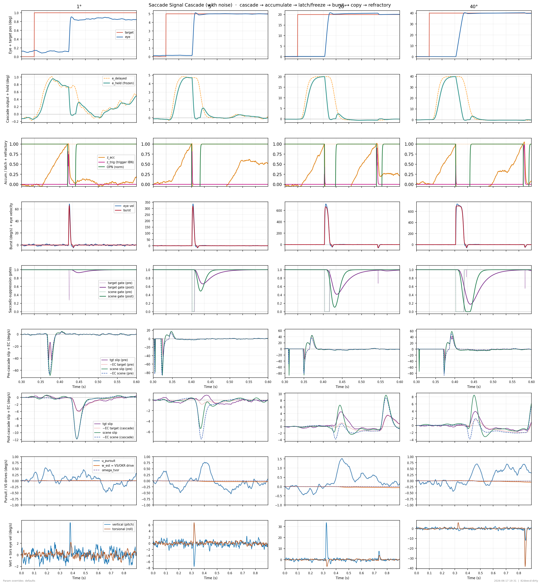
| measure | value | band | golden | drift | |
|---|---|---|---|---|---|
| PASS | Final endpoint error vs target in hold window — WITH corrective saccades | 0.1636 deg | [−∞, 1.2] | 0.1636 | +0.0% |
| PASS | Primary-saccade endpoint error — WITHOUT correctives (open-loop undershoot) | 0.3247 deg | — | 0.3247 | +0.0% |
| PASS | Mean slow-phase speed in hold window — WITHOUT fast phases (drift / oscillation) | 0.8459 deg/s | [0.1, 1] | 0.8459 | +0.0% |
What this shows
Row-by-row signal flow for 1°, 5°, 20°, 40° saccades: position, visual cascade + hold, accumulator/latch, residual error, burst, eye velocity, refractory state. e_held freezes at saccade onset; burst proportional to e_res; accumulator floor locks out next saccade for ~270 ms.
📖 Robinson (1975) J Neurophysiol; Scudder et al. (2002)
2. VOR / OKR · 794.3s · 82deecd-dirty.406d9dd · 2026-06-17 19:45 ⚠ out of date — code now 82deecd-dirty.25eebb3
Vestibulo-ocular reflex and optokinetic response. Replicates Raphan et al. (1979) Fig.9: VOR in dark, OKN+OKAN, and VVOR. Slow-phase velocity shown as 0.5-s binned scatter (post-saccadic spikes averaged into the slow-phase trend). Tests post-rotatory and OKAN time constants, VVOR gain, and nystagmus waveform. Scene slip → VS goes through K_vor_direct·(saccadically-gated slip) + K_cereb_okr·(cerebellar EC correction); nodulus-uvula gravity dumping (K_cereb_nu) sets the velocity-storage TC.
Raphan 1979 Fig. 9 Replication
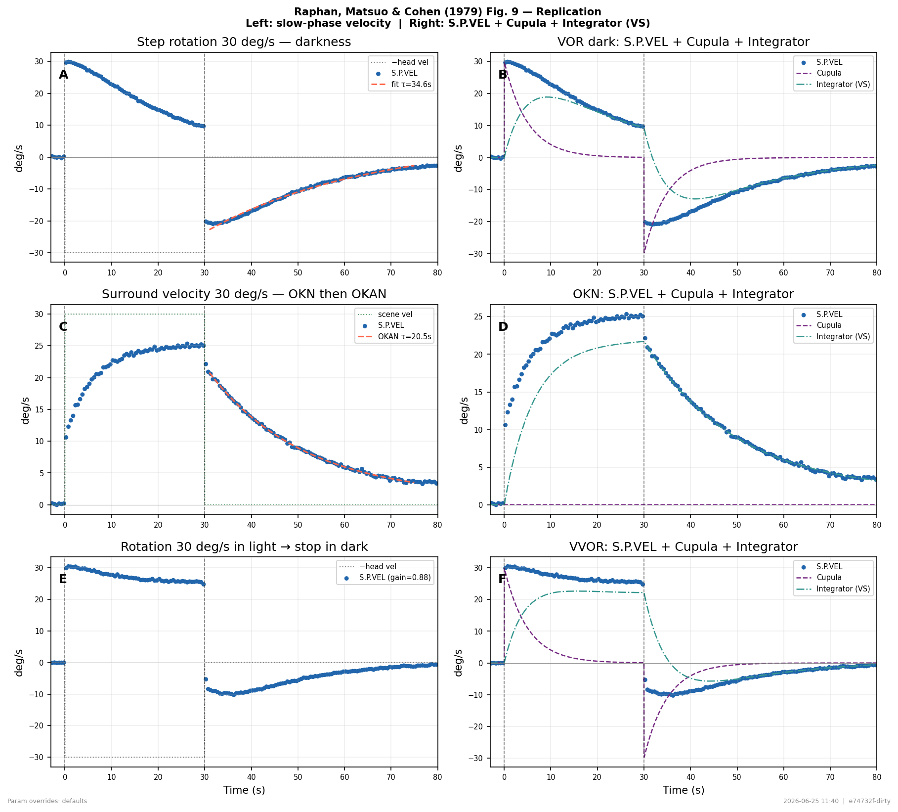
| measure | value | band | golden | drift | |
|---|---|---|---|---|---|
| FAIL | VVOR slow-phase gain during rotation in light (10–25 s) | 0.8476 | [0.85, 1.1] | 0.8476 | +0.0% |
| FAIL | VOR post-rotatory SPV decay time constant (VS-extended) | 32.94 s | [10, 30] | 32.94 | +0.0% |
| PASS | OKAN SPV decay time constant after scene off (~tau_vs) | 26.3 s | [10, 30] | 26.3 | +0.0% |
| PASS | OKN steady-state SPV gain (last 10 s of scene-on) | 0.8017 | [0.75, 1.1] | 0.8017 | +0.0% |
What this shows
Panels A–F matching Raphan et al. (1979) Fig.9. Left col: SPV only. Right col: CUP (canal estimate), INT (velocity storage), SPV overlaid. A/B: VOR in dark. C/D: OKN+OKAN. E/F: VVOR (light→dark). A: post-rot SPV TC 10–30 s. C: OKN gain~1, OKAN TC~20 s. E: VVOR gain>0.85 during rotation; post-rot TC similar to A. B/D/F: INT follows SPV; CUP decays at canal TC (~5 s).
📖 Raphan, Matsuo & Cohen (1979) Exp Brain Res 35:229–248
VOR — Bode (body rotation)
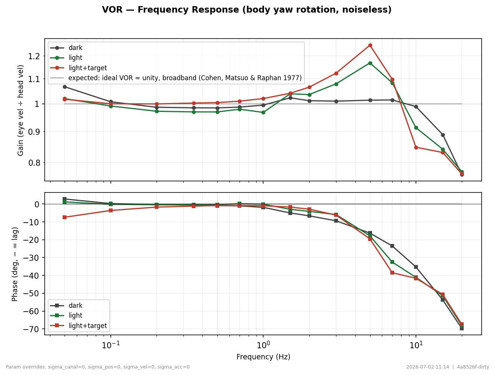
| measure | value | band | golden | drift | |
|---|---|---|---|---|---|
| PASS | VOR low-frequency gain — dark | 1.062 | [0.4, 1.1] | 1.062 | +0.0% |
| PASS | VOR phase at 0.5 Hz (− = lag) — dark | -0.8991 deg | — | -0.8991 | +0.0% |
| PASS | VOR low-frequency gain — light | 1.018 | [0.4, 1.1] | 1.018 | +0.0% |
| PASS | VOR phase at 0.5 Hz (− = lag) — light | -0.4952 deg | — | -0.4952 | +0.0% |
| PASS | VOR low-frequency gain — light+target | 0.4141 | [0.4, 1.1] | 0.4141 | +0.0% |
| PASS | VOR phase at 0.5 Hz (− = lag) — light+target | -0.7201 deg | — | -0.7201 | +0.0% |
What this shows
Sinusoidal head yaw sweep (0.05–2 Hz, 30 deg/s), NOISELESS. Eye velocity (SPV) ÷ head velocity in dark, light, light+target. Light gain ≈ 1 across frequency (VVOR); dark gain drops below ~0.2 Hz (canal high-pass).
📖 Cohen, Matsuo & Raphan (1977); Raphan et al. (1979)
OKR — Bode (full-field scene motion)
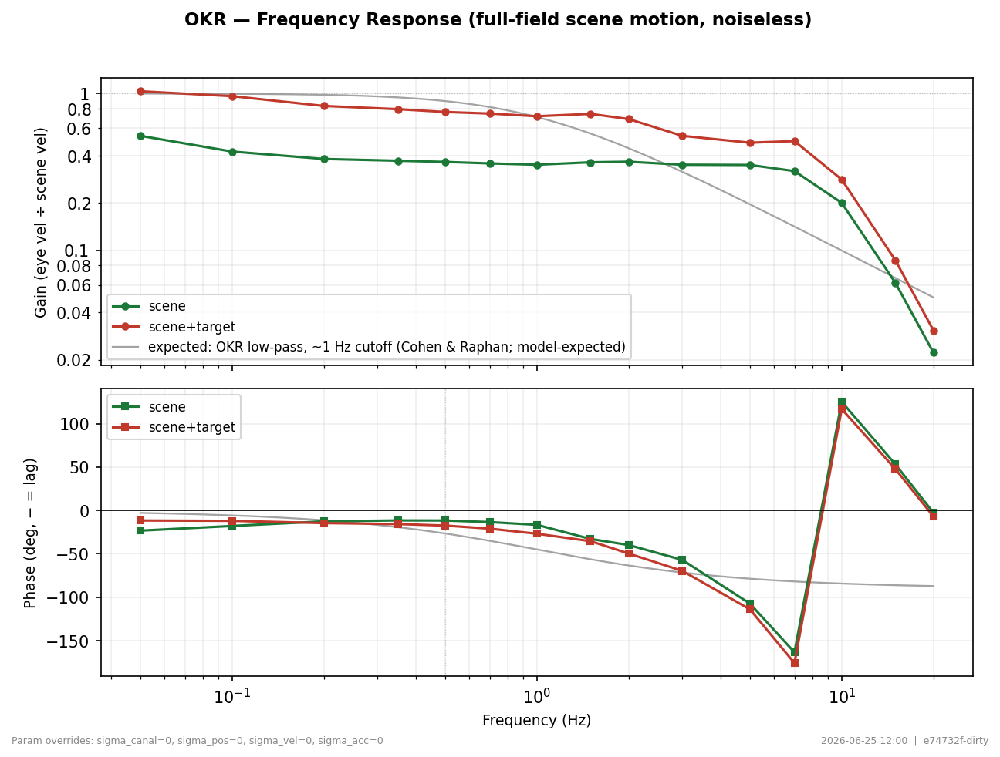
| measure | value | band | golden | drift | |
|---|---|---|---|---|---|
| PASS | OKR low-frequency gain — scene | 0.5018 | [0.4, 1.05] | 0.5018 | +0.0% |
| PASS | OKR −3 dB bandwidth — scene | 0.8353 Hz | [0.1, +∞] | 0.8353 | +0.0% |
| WARN | OKR low-frequency gain — scene+target | 0.116 | [0.4, 1.05] | 0.116 | +0.0% |
| WARN | OKR −3 dB bandwidth — scene+target | nan | [0.1, +∞] | — | — |
What this shows
Sinusoidal scene-velocity sweep (0.05–2 Hz, 20 deg/s), NOISELESS. Eye velocity (SPV) ÷ scene velocity for scene-only and scene+target. OKR is low-pass — gain rolls off above ~0.5 Hz; a stationary target suppresses it. Gain ≈ 1 at low f, rolls off above ~0.5 Hz.
📖 Cohen, Matsuo & Raphan (1977) J Neurophysiol
VOR / OKR Signal Cascade (Internal)
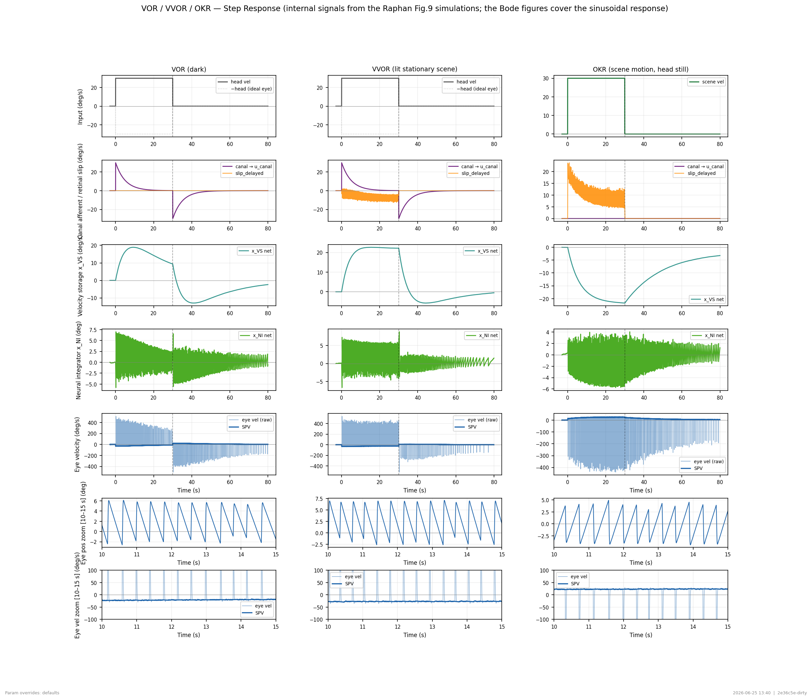
| measure | value | band | golden | drift | |
|---|---|---|---|---|---|
| PASS | VOR-in-dark SPV gain at early plateau (2–5 s, noiseless) | 0.8696 | [0.6, 1.05] | 0.8696 | +0.0% |
| PASS | OKR steady-state SPV gain (14–18 s, noiseless) | 0.7934 | [0.7, 1.1] | 0.7934 | +0.0% |
What this shows
Left column (VOR in dark): head velocity → canal afferents → VS state → NI state → eye velocity. Right column (OKN): scene velocity → delayed retinal slip → VS → NI → eye velocity. VOR: canal signal decays (TC ~5 s), VS extends it. OKR: slip_delayed drives VS and NI until eye velocity matches scene.
📖 Raphan et al. (1979); Robinson (1975)
3. Gravity Estimator · 647.4s · 82deecd-dirty.406d9dd · 2026-06-17 19:56 ⚠ out of date — code now 82deecd-dirty.25eebb3
Canal-otolith interaction: OCR, OVAR, VOR tilt suppression, OCR vs tilt angle, somatogravic OCR frequency dependence. Parameters: tau_grav=1.6666666666666667, K_gd=2.86, g_ocr=1.019 (Laurens & Angelaki 2011).
Ocular Counterroll (OCR)
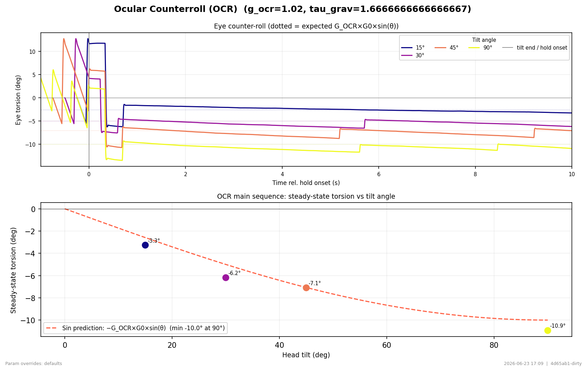
| measure | value | band | golden | drift | |
|---|---|---|---|---|---|
| PASS | OCR amplitude ratio: measured SS torsion ÷ −G_OCR·G0·sin(θ) | 1.032 | [0.8, 1.2] | 1.032 | +0.0% |
| PASS | RMS deviation of SS torsion from the expected sine law across tilts | 0.2317 deg | [−∞, 1] | 0.2317 | +0.0% |
What this shows
Counter-roll traces for tilts [15.0, 30.0, 45.0, 90.0]° + SS scatter. g_ocr=1.02. Torsion ≈ −G_OCR×G0×sin(θ). 30° → ≈−5.0°. g_est holds flat after tilt (no drift).
📖 Boff, Kaufman & Thomas (1986); Laurens & Angelaki (2011)
OCR cascade (3 visual conditions)
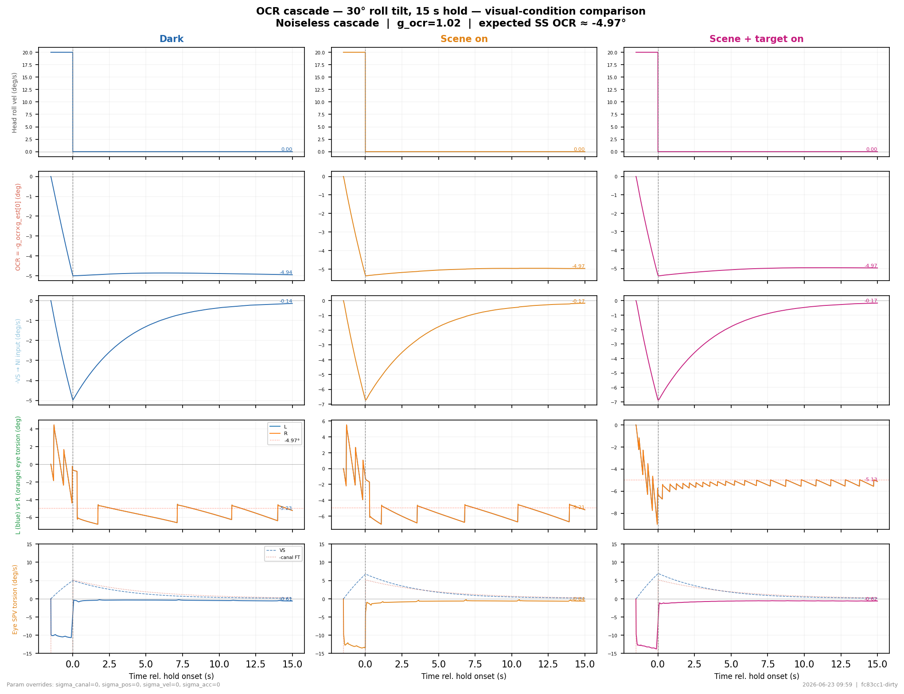
What this shows
30.0° roll tilt — OCR cascade across dark / scene-on / scene+target-on conditions, 15 s hold, noiseless. Eye torsion stabilises at ≈-4.97° in all conditions. SPV row: -VS (dashed) and -canal FT (dotted) should bracket the measured SPV.
📖 Debug diagnostic
OVAR — Off-Vertical Axis Rotation
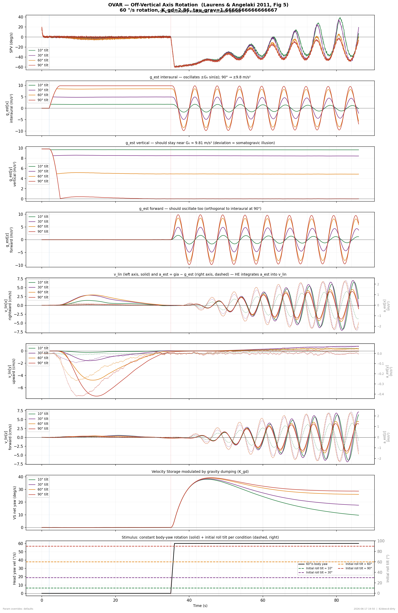
| measure | value | band | golden | drift | |
|---|---|---|---|---|---|
| PASS | OVAR SPV modulation amplitude at 10° tilt (∝ sin tilt) | 19.14 deg/s | [0, +∞] | 19.14 | +0.0% |
| PASS | OVAR steady-state average SPV (screw/translation bias) at 10° tilt | -22.85 deg/s | — | -22.85 | +0.0% |
| PASS | OVAR SPV modulation amplitude at 30° tilt (∝ sin tilt) | 20.81 deg/s | [0, +∞] | 20.81 | +0.0% |
| PASS | OVAR steady-state average SPV (screw/translation bias) at 30° tilt | -26.4 deg/s | — | -26.4 | +0.0% |
| PASS | OVAR SPV modulation amplitude at 60° tilt (∝ sin tilt) | 15.29 deg/s | [0, +∞] | 15.29 | +0.0% |
| PASS | OVAR steady-state average SPV (screw/translation bias) at 60° tilt | -31.87 deg/s | — | -31.87 | +0.0% |
| PASS | OVAR SPV modulation amplitude at 90° tilt (∝ sin tilt) | 13.54 deg/s | [0, +∞] | 13.54 | +0.0% |
| PASS | OVAR steady-state average SPV (screw/translation bias) at 90° tilt | -33.75 deg/s | — | -33.75 | +0.0% |
What this shows
60°/s rotation, tilt angles [10.0, 30.0, 60.0, 90.0]°. Replicates Laurens & Angelaki (2011) Fig 5. SPV sinusoidally modulated at rotation period. Modulation amplitude ∝ sin(tilt). g_est oscillates ±G₀ sin(α). A small residual v_lin DC bias along the rotation axis ("screw direction") reflects the perceived sustained linear translation reported by subjects during prolonged OVAR (Denise et al. 1988; Wood 2002).
📖 Laurens & Angelaki (2011) Exp Brain Res 210:407; Denise, Darlot, Droulez, Cohen, Berthoz (1988) Exp Brain Res 67:629 — perceived linear translation during OVAR; Wood (2002) J Vest Res 12:223 — tilt-translation discrimination
VOR Tilt Suppression
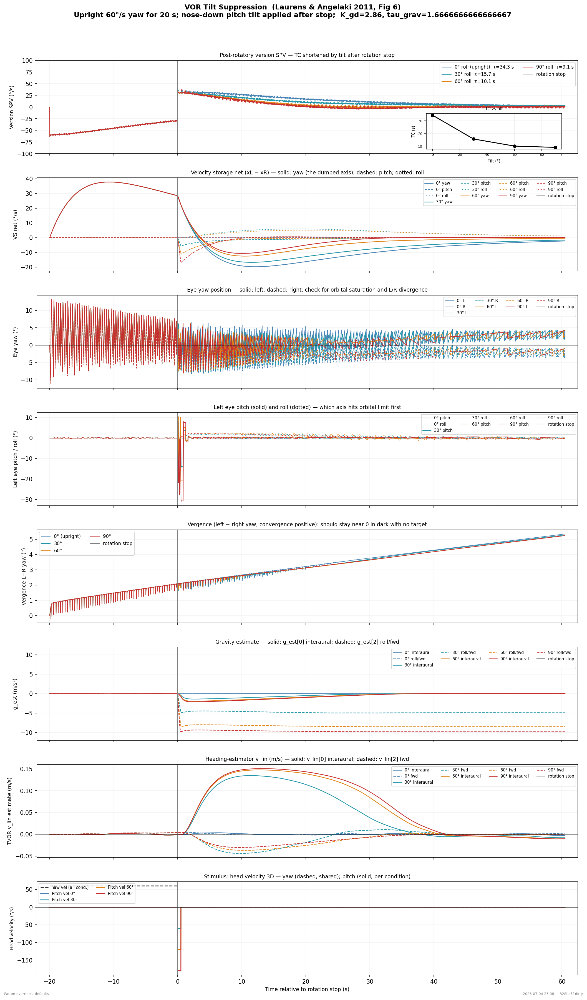
| measure | value | band | golden | drift | |
|---|---|---|---|---|---|
| PASS | Post-rotatory version-SPV decay TC at 0° post-stop tilt | 34.22 s | — | 34.22 | +0.0% |
| PASS | Post-rotatory version-SPV decay TC at 30° post-stop tilt | 3.111 s | — | 3.111 | +0.0% |
| PASS | Post-rotatory version-SPV decay TC at 60° post-stop tilt | 3.114 s | — | 3.114 | +0.0% |
| PASS | Post-rotatory version-SPV decay TC at 90° post-stop tilt | 3.189 s | — | 3.189 | +0.0% |
| PASS | Sustained late post-rotatory SPV at 60° — reversal / opposite-direction nystagmus | 2.015 deg/s | — | 2.015 | +0.0% |
| PASS | Sustained late post-rotatory SPV at 90° — reversal / opposite-direction nystagmus | 0.418 deg/s | — | 0.418 | +0.0% |
What this shows
Upright 60°/s yaw; tilt [0.0, 30.0, 60.0, 90.0]° applied after stop. Replicates Laurens & Angelaki (2011) Fig 6. Per-rotatory identical. TC decreases with post-stop tilt. 0°: TC ≈ τ_vs. 90°: TC ≈ τ_canal.
📖 Laurens & Angelaki (2011) Exp Brain Res
Somatogravic OCR — Frequency Dependence
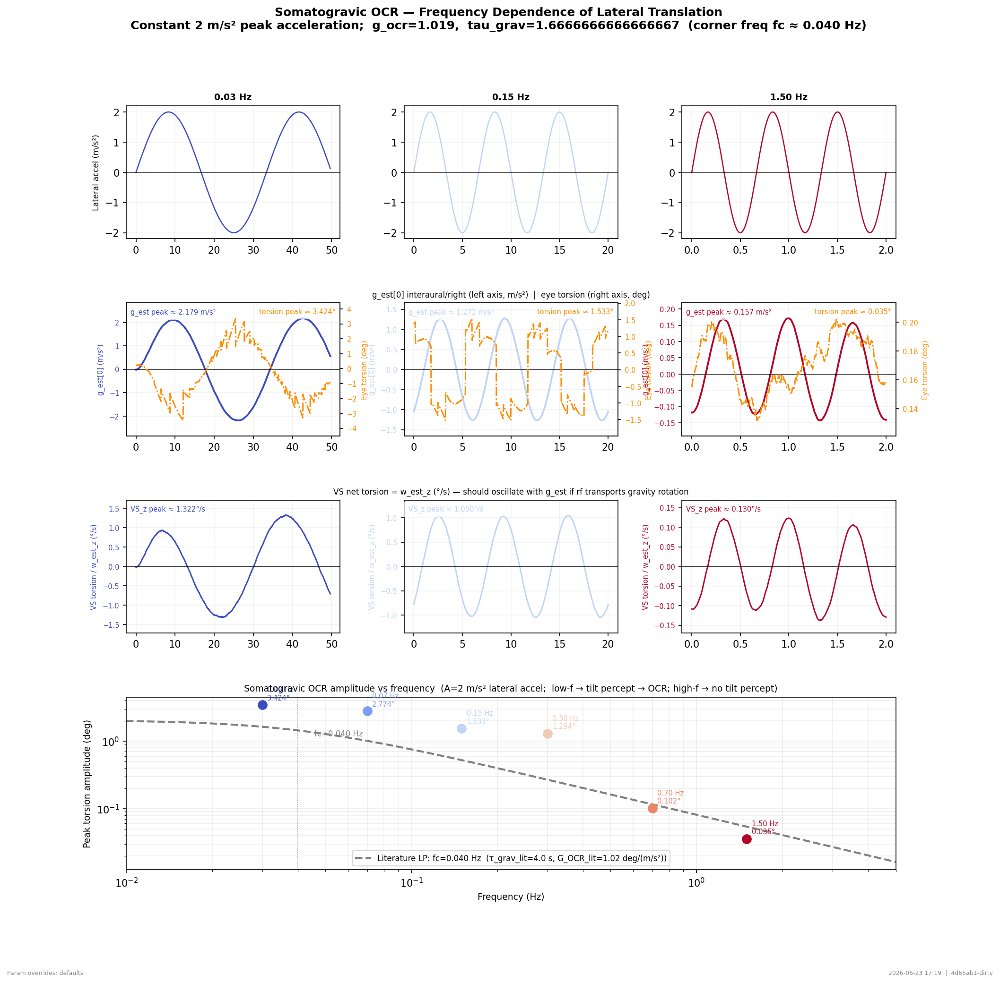
What this shows
Sinusoidal lateral translation at [0.03, 0.07, 0.15, 0.3, 0.7, 1.5] Hz, 2.0 m/s² peak. OCR via gravity estimator LP filter. Corner frequency fc = K_grav/(2π) ≈ 0.040 Hz. OCR amplitude ∝ 1/√(1+(f/fc)²). Low f → peak ≈ 2.04°; high f → near 0°.
📖 Mayne (1974); Laurens & Angelaki (2011)
4. Smooth Pursuit · 261.6s · 82deecd-dirty.406d9dd · 2026-06-17 20:00 ⚠ out of date — code now 82deecd-dirty.25eebb3
Smooth pursuit and catch-up saccades. Tests velocity gain at multiple speeds, sinusoidal tracking, and the pursuit integrator + saccade interaction cascade. Pursuit input = K_pursuit_direct·(saccadically-gated retinal slip) + K_cereb_pu·(cerebellar EC correction); the closed-loop pursuit memory τ_eff ≈ 1.45 s (Smith predictor) despite the long pop-leak τ_pursuit = 40 s.
Smooth Pursuit — Velocity Range
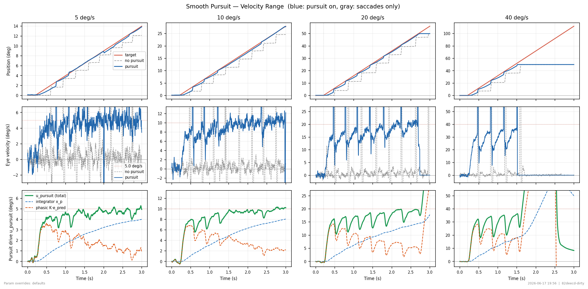
| measure | value | band | golden | drift | |
|---|---|---|---|---|---|
| PASS | Steady-state pursuit gain (SPV ÷ target vel) at 5 deg/s ramp | 1.036 | [0.8, 1.1] | 1.036 | +0.0% |
| PASS | Steady-state pursuit gain at 10 deg/s ramp | 1.022 | [0.8, 1.1] | 1.022 | +0.0% |
| PASS | Pursuit onset latency at 10 deg/s (ramp onset → SPV > 2 deg/s) | 62 ms | [60, 180] | 62 | +0.0% |
What this shows
Step-ramp target at 5, 10, 20, 40 deg/s. Blue: smooth pursuit enabled. Gray: saccades only (pursuit off). Rows: position, velocity, pursuit drive (total + integrator + phasic). At 5–10 deg/s: pursuit tracks closely, steady-state gain > 0.8. At higher velocities: catch-up saccades + partial pursuit.
📖 Lisberger & Westbrook (1985) J Neurosci; Rashbass (1961)
Smooth Pursuit — Bode (frequency response)
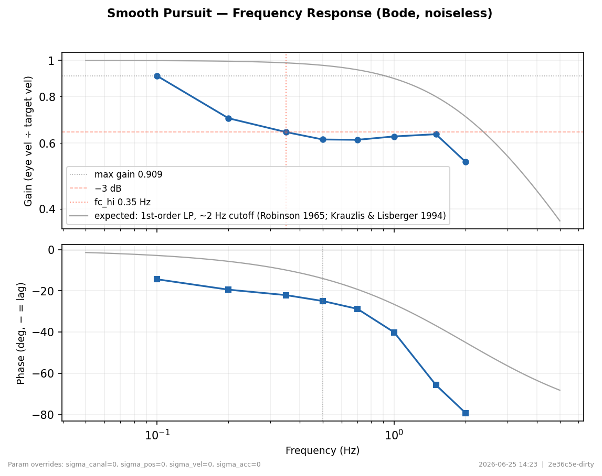
| measure | value | band | golden | drift | |
|---|---|---|---|---|---|
| PASS | Pursuit low-frequency velocity gain | 0.8594 | [0.7, 1.1] | 0.8594 | +0.0% |
| PASS | Pursuit −3 dB bandwidth (corner frequency) | 1.174 Hz | [0.3, +∞] | 1.174 | +0.0% |
| PASS | Pursuit phase at 0.5 Hz (− = lag) | -26.91 deg | [-90, 10] | -26.91 | +0.0% |
What this shows
Sinusoidal target-velocity sweep (0.1–2 Hz, 10 deg/s peak), NOISELESS. Gain = eye-velocity (SPV) ÷ target-velocity; phase lag vs frequency. Gain ≈ 1 at low f, −3 dB near ~1 Hz; phase lag grows with frequency.
📖 Lisberger, Evinger, Johanson & Fuchs (1981) J Neurophysiol
Smooth Pursuit Signal Cascade (Internal)
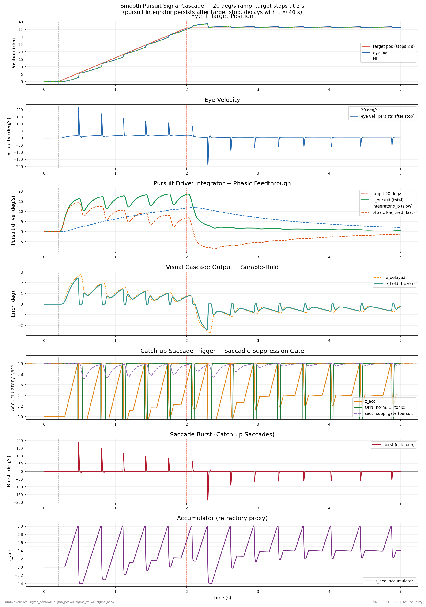
What this shows
Full signal chain for 20 deg/s pursuit: target ramps 0.2–2.0 s then holds. Pursuit integrator persists after target stop (τ ≈ 40 s). Rows: position, velocity, pursuit drive (total/integrator/phasic), visual error, saccade accumulator, burst, refractory state. Phasic drive rises fast at onset, decays to 0 at steady state. After target stops at 2 s: phasic reverses (retinal slip now backward), integrator decays slowly — eye coasts then corrects with catch-up saccades. Integrator TC visible as slow drift in x_p post-stop.
📖 Lisberger & Westbrook (1985)
5. Near response (vergence + accommodation) · 358.1s · 82deecd-dirty.406d9dd · 2026-06-17 20:06 ⚠ out of date — code now 82deecd-dirty.25eebb3
Merged near-response section. Basic midline vergence (noiseless) — reaches geometric target, version stays conjugate, latency/TC/overshoot. Vergence–saccade interaction (Zee SVBN facilitation). AC/A cross-link. Vergence and accommodation frequency responses (Bode). The vergence cascade is kept as an internal-signals debug figure (no metrics).
Basic midline vergence (symmetric, noiseless)
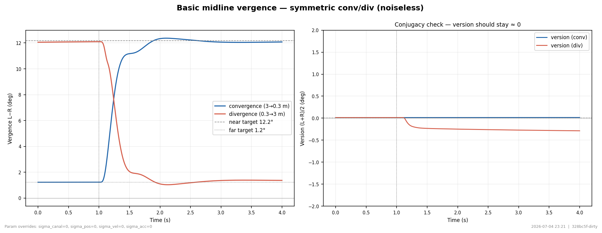
| measure | value | band | golden | drift | |
|---|---|---|---|---|---|
| PASS | Steady-state vergence error vs geometric target (convergence) | 0.4046 deg | [−∞, 1.5] | 0.4046 | +0.0% |
| PASS | Max |version| during symmetric vergence (conjugacy — should be ≈0) | 0.1415 deg | [−∞, 1] | 0.1415 | +0.0% |
| PASS | Vergence latency (step → 10% of change) | 163 ms | [80, 300] | 163 | +0.0% |
| PASS | Vergence rise time constant (exp fit) | 0.2379 s | [0.1, 2] | 0.2379 | +0.0% |
| PASS | Convergence overshoot fraction (peak − SS)/(SS − start) | 0.32 | [−∞, 0.5] | 0.32 | +0.0% |
What this shows
Symmetric convergence (3→0.3 m) and divergence (0.3→3 m) steps, NOISELESS. Left: vergence reaching geometric target. Right: version (conjugacy check). Vergence reaches geometric target; version stays ≈0; rise TC ~0.2–1 s; small overshoot.
📖 Mays (1984) J Neurophysiol; Rashbass & Westheimer (1961) J Physiol
Vergence Main Sequence (peak velocity vs. amplitude)
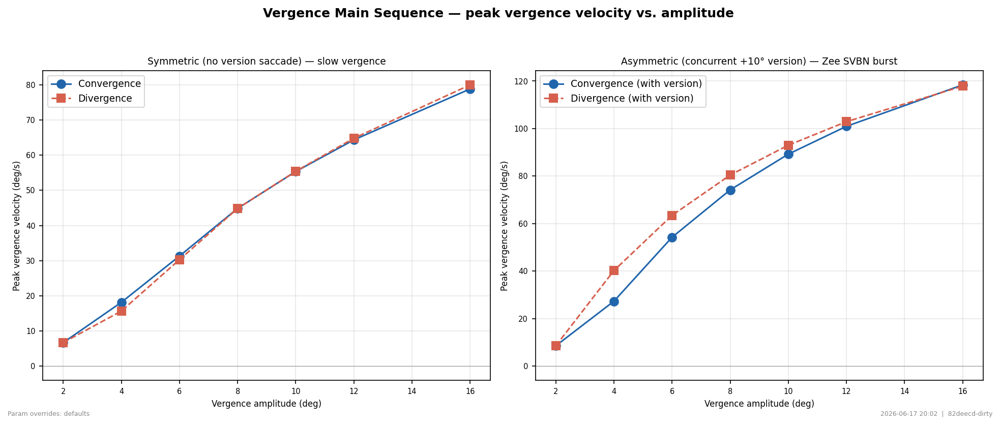
| measure | value | band | golden | drift | |
|---|---|---|---|---|---|
| PASS | Symmetric peak-velocity ratio convergence ÷ divergence (>1 expected) | 1.006 | [1, +∞] | 1.006 | +0.0% |
| PASS | Zee SVBN facilitation: asymmetric ÷ symmetric peak vergence velocity | 1.579 | [1, +∞] | 1.579 | +0.0% |
What this shows
Peak vergence velocity for amplitudes 2–16°, both directions, with and without a concurrent version saccade. Left: symmetric (slow vergence only). Right: asymmetric (Zee SVBN burst active). Symmetric: peak velocity grows roughly linearly with amplitude. Asymmetric: peak velocity 2–3× higher than symmetric (Zee facilitation). Convergence > divergence at every amplitude (asymmetric saturating gain).
📖 Zee et al. (1992) J Neurophysiol; Rashbass & Westheimer (1961) J Physiol; Collewijn et al. (1988) J Physiol
AC/A — lens-driven convergence
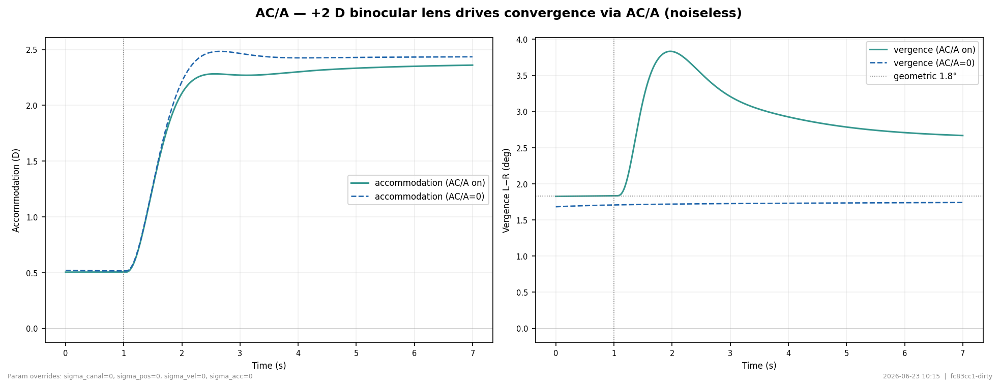
| measure | value | band | golden | drift | |
|---|---|---|---|---|---|
| PASS | Extra convergence from AC/A (lens-driven vergence, on − off) | 1.059 deg | [0, +∞] | 1.059 | +0.0% |
| PASS | Behavioural AC/A ratio (Δvergence pd ÷ Δaccommodation D) | 0.9883 pd/D | [0, +∞] | 0.9883 | +0.0% |
What this shows
+2 D binocular lens at 2 m, NOISELESS. With AC/A the extra accommodation drives convergence; with AC_A=0 vergence stays at geometric. Accommodation rises ≥1 D; AC/A adds convergence above geometric; AC_A=0 control flat.
📖 Schor CM (1979) Vision Res; Morgan (1944)
Vergence — Bode (frequency response)
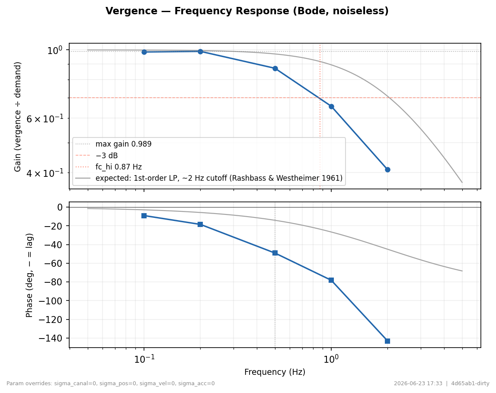
| measure | value | band | golden | drift | |
|---|---|---|---|---|---|
| PASS | Vergence low-frequency gain | 1.009 | [0.5, 1.1] | 1.009 | +0.0% |
| PASS | Vergence −3 dB bandwidth | 0.9466 Hz | [0.3, +∞] | 0.9466 | +0.0% |
| PASS | Vergence phase at 0.5 Hz (− = lag) | -59.35 deg | [-120, 10] | -59.35 | +0.0% |
What this shows
Sinusoidal depth/disparity demand (0.1–2 Hz, ±2° about 4°), NOISELESS. Gain = vergence ÷ demand; low-pass, BW ~1–2 Hz. Gain ≈ 1 at low f, −3 dB near ~1 Hz; phase lag grows with frequency.
📖 Rashbass & Westheimer (1961) J Physiol
Accommodation — Bode (frequency response)
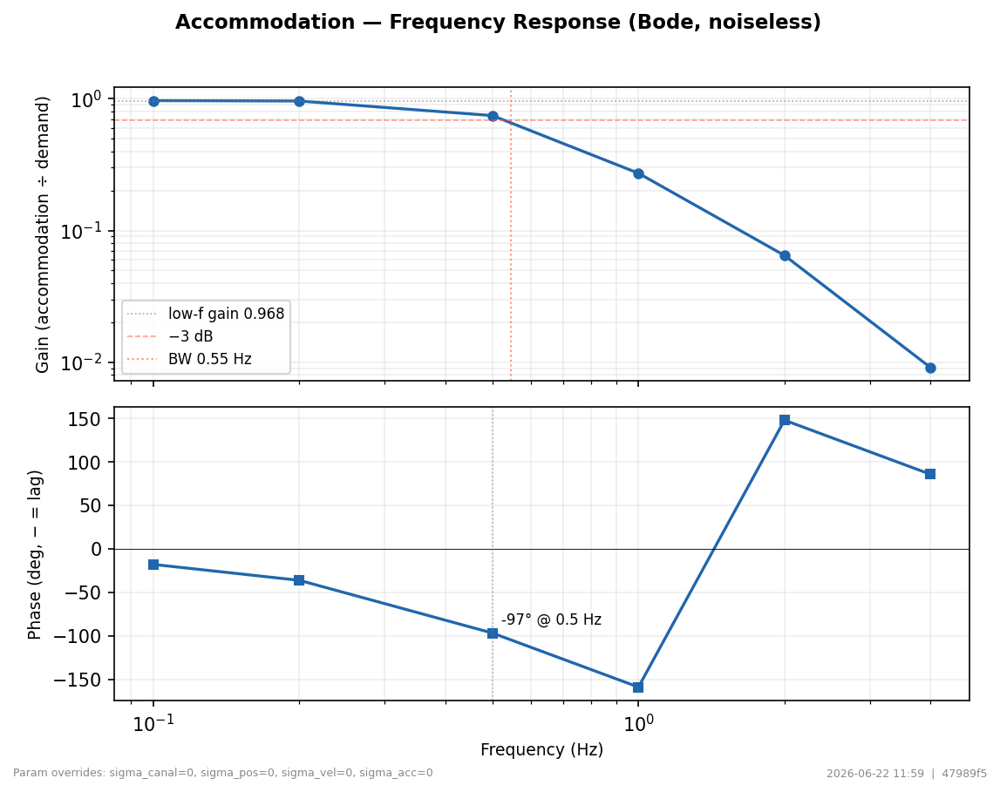
| measure | value | band | golden | drift | |
|---|---|---|---|---|---|
| PASS | Accommodation low-frequency gain | 0.98 | [0.5, 1.05] | 0.98 | +0.0% |
| PASS | Accommodation −3 dB bandwidth (~2 Hz) | 0.8323 Hz | [0.5, +∞] | 0.8323 | +0.0% |
What this shows
Sinusoidal accommodative demand (0.1–4 Hz, ±1 D about 2 D), NOISELESS. Gain = accommodation ÷ demand; low-pass, BW ~2 Hz. Gain ≈ 1 at low f, −3 dB near ~2 Hz.
📖 Stark, Takahashi & Zames (1965); Read & Schor (2022)
Vergence Cascade (4 conditions)
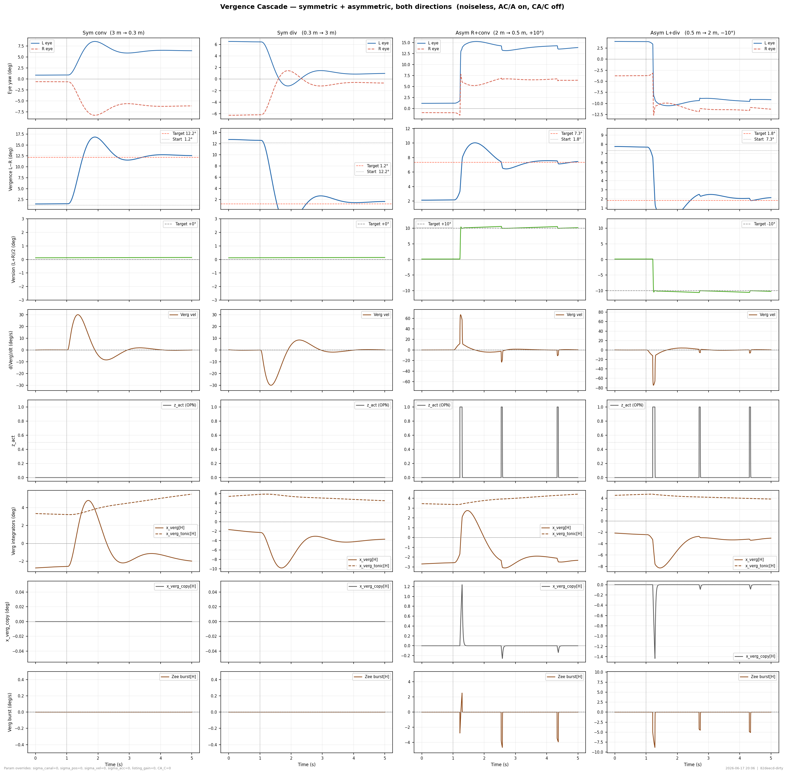
What this shows
8 rows × 4 cols. Cols: sym conv (3→0.3 m), sym div (0.3→3 m), asym R+conv (2→0.5 m, +10°), asym L+div (0.5→2 m, −10°). Rows: eye position, vergence, version, vergence velocity, OPN gate, integrators (x_verg + x_verg_tonic [H]), x_verg_copy, Zee SVBN burst. Symmetric cols: version stays near 0; asymmetric: version follows target. Vergence settles at geometric target. SVBN fires only during saccades.
📖 Zee et al. (1992) J Neurophysiol; Collewijn et al. (1988) J Physiol; Schor (1979) Vision Res
8. Translational VOR (T-VOR) · 244.1s · 82deecd-dirty.406d9dd · 2026-06-17 20:20 ⚠ out of date — code now 82deecd-dirty.25eebb3
Vest + visual fusion of head translation, scaled by vergence-derived distance to give compensatory eye velocity. Trapezoid pulses along sway / heave / surge in lit (scene only) and dark conditions.
T-VOR cascade — sway / heave / surge × LIT (scene only) / DARK
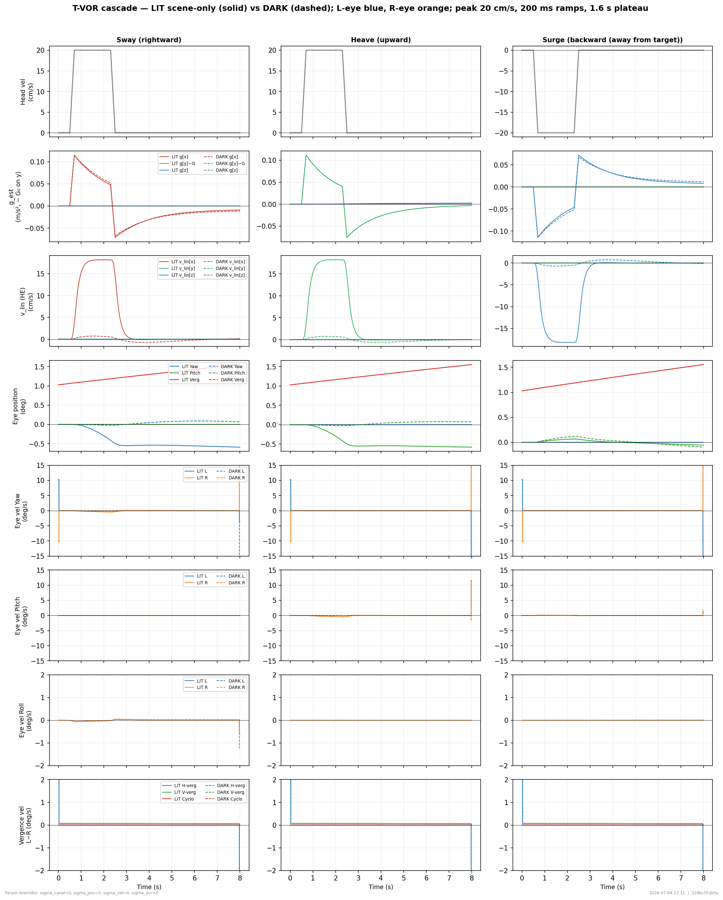
What this shows
Trapezoid head velocity (peak 20 cm/s, 200 ms ramps, 1.6 s plateau) along x (sway), y (heave), z (surge); target at 40 cm. Rows: stimulus, g_est, v_lin, eye position, eye SPV. Sway → eye yaw counter-rotates (cross product); Heave → eye pitch counter-rotates; Surge → vergence rate (dot product · IPD/D²) drives vergence change. g_est should remain ≈ [0, 9.81, 0]. SPV in DARK measures pure vestibular T-VOR; LIT scene-only adds OKR / visual heading contribution.
📖 Paige & Tomko (1991); Angelaki & Hess (2001)
T-VOR — Lateral Bode (primary gain + torsion cross-effect)
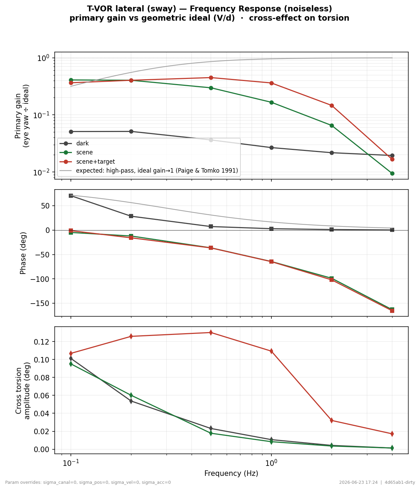
| measure | value | band | golden | drift | |
|---|---|---|---|---|---|
| WARN | tVOR high-frequency gain vs geometric ideal (4 Hz) — dark | 0.05516 | [0.2, 1.4] | 0.05516 | +0.0% |
| PASS | Cross-axis torsion amplitude at 1 Hz during lateral translation — dark | 0.01066 deg | — | 0.01066 | +0.0% |
| WARN | tVOR high-frequency gain vs geometric ideal (4 Hz) — scene | 0.02626 | [0.2, 1.4] | 0.02626 | +0.0% |
| PASS | Cross-axis torsion amplitude at 1 Hz during lateral translation — scene | 0.1687 deg | — | 0.1687 | +0.0% |
| WARN | tVOR high-frequency gain vs geometric ideal (4 Hz) — scene+target | 0.01345 | [0.2, 1.4] | 0.01345 | +0.0% |
| PASS | Cross-axis torsion amplitude at 1 Hz during lateral translation — scene+target | 0.1052 deg | — | 0.1052 | +0.0% |
What this shows
Sinusoidal interaural translation (20 cm/s, 0.1–4 Hz), NOISELESS, target at 40 cm. Top: horizontal eye-velocity gain vs the geometric ideal (V/d); middle: phase; bottom: cross-axis torsion (somatogravic / OCR coupling). tVOR is high-pass — gain rises toward 1 at high frequency (otolith tilt/translation disambiguation). Cross torsion rolls off with frequency (somatogravic low-pass).
📖 Paige & Tomko (1991); Angelaki & Hess (2001); Laurens & Angelaki (2011)
6. Fixation · 71.5s · 82deecd-dirty.406d9dd · 2026-06-17 20:21 ⚠ out of date — code now 82deecd-dirty.25eebb3
Fixational eye movements driven by different noise sources. Tests canal noise filtering, retinal position OU drift (microsaccades), and retinal velocity noise (pursuit-like drift).
Fixational Eye Movements — Noise Source Comparison
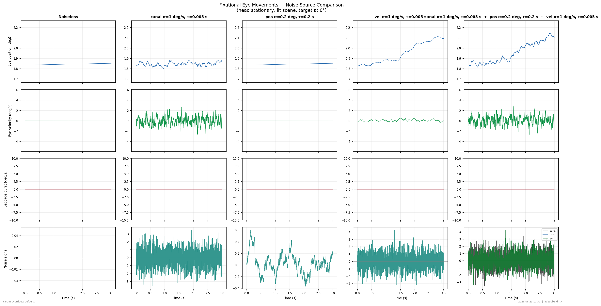
| measure | value | band | golden | drift | |
|---|---|---|---|---|---|
| PASS | Eye-position std with all noise off (should be ≈0 — stability sanity) | 0.005952 deg | [−∞, 0.05] | 0.005952 | +0.0% |
| PASS | Fixational drift (eye-position std) with all noise sources on | 0.2028 deg | [0.02, 0.6] | 0.2028 | +0.0% |
| PASS | Microsaccade rate (burst events/s) in the all-noise condition | 0.3333 Hz | [0, 4] | 0.3333 | +0.0% |
What this shows
5-column comparison: noiseless, canal noise only, retinal position OU drift, retinal velocity noise, and all three combined. Rows: eye position, velocity, saccade burst, noise signal. Noiseless: eye stays at 0°. Canal noise: slow drift + rare microsaccades. Pos noise: OU drift → corrective microsaccades when error exceeds threshold. Vel noise: smooth pursuit-like drift.
📖 Rolfs (2009) Neurosci Biobehav Rev 33:1597–1627
7. Listing's Law · 97.8s · 82deecd-dirty.406d9dd · 2026-06-17 20:22 ⚠ out of date — code now 82deecd-dirty.25eebb3
Torsional constraint T = OCR − H·V·π/360: saccade plane scatter and OCR-driven correction saccade.
Listing's Plane
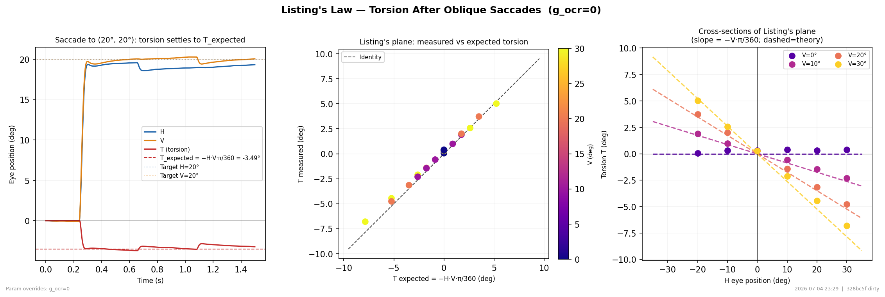
What this shows
Saccades to a (H, V) grid; torsion measured at steady state. g_ocr=0 so OCR=0 and T_required = −H·V·π/360. Scatter points lie on identity line; cross-sections linear with slope −V·π/360.
📖 Tweed, Haslwanter & Fetter (1998) IOVS; van Rijn & van den Berg (1993) EBR
OCR Torsional Correction Saccade
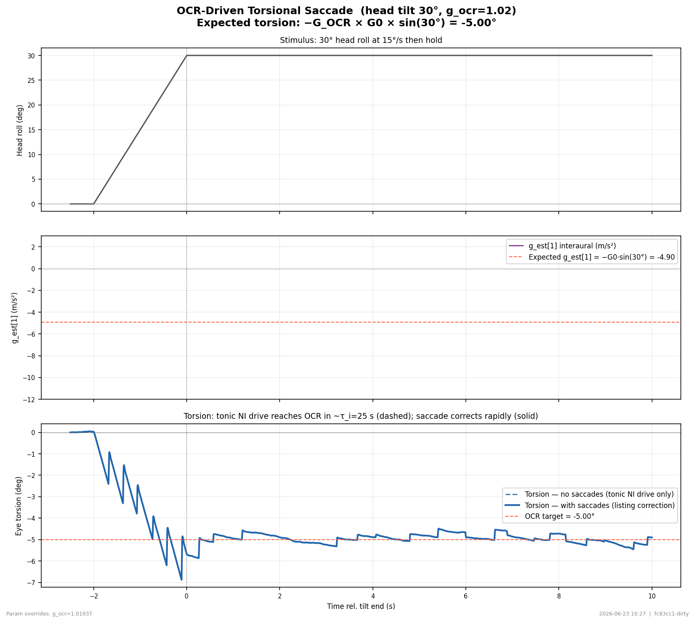
What this shows
Head tilt 30°; g_ocr=1.02. Torsional listing error drives a corrective saccade. With saccades: torsion jumps to ≈-5.0° after accumulator delay (~80 ms × n_sacs). Without saccades: slow exponential rise with τ≈τ_i=25 s.
📖 Listing (1854); Tweed et al. (1998)
Listing's Plane During Smooth Pursuit
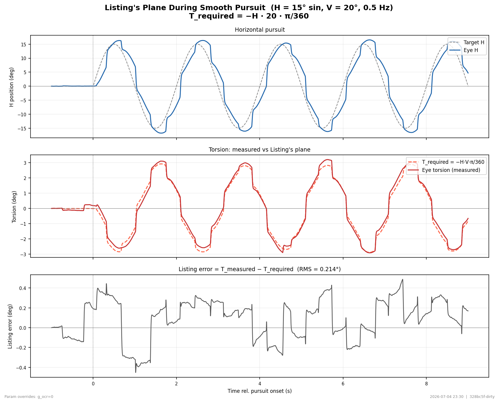
What this shows
Sinusoidal H pursuit (15° at 0.5 Hz) at V=20°. vel_torsion demand added to NI keeps torsion on Listing's plane continuously. Eye torsion tracks T_required = −H·20·π/360 in real time; Listing error RMS < 0.5°.
📖 Tweed, Haslwanter & Fetter (1998) IOVS; van Rijn & van den Berg (1993) EBR